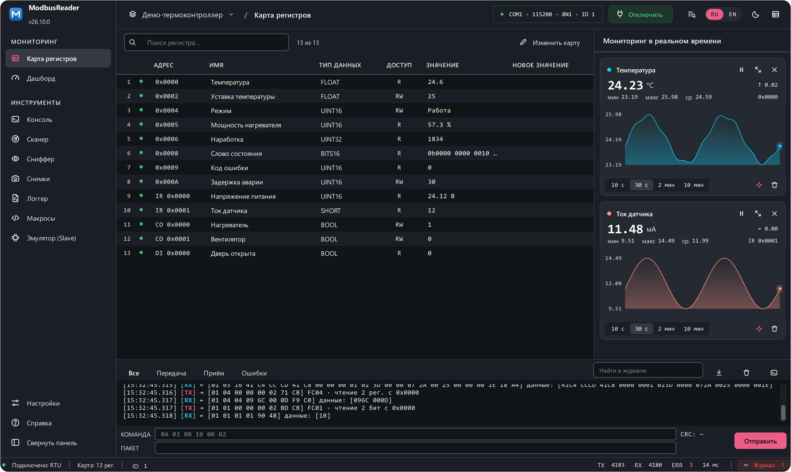
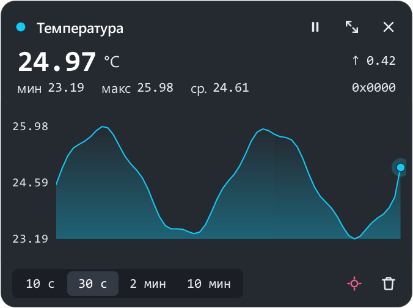
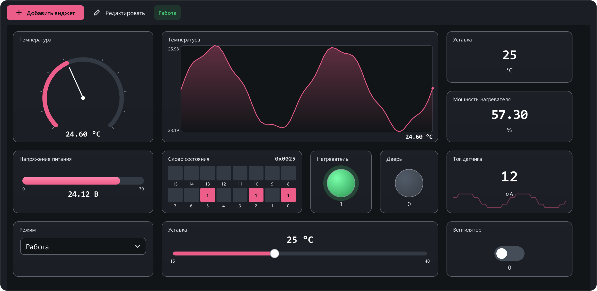
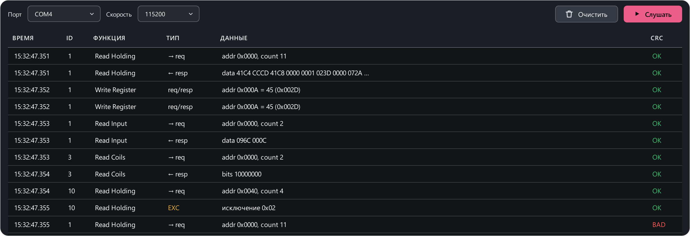
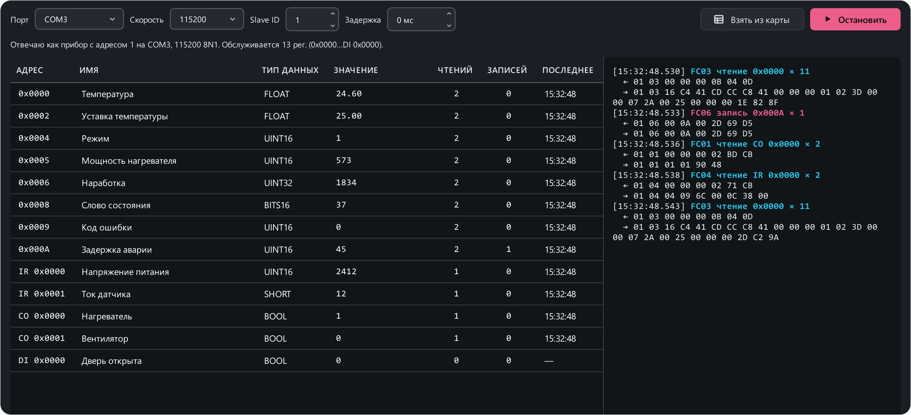
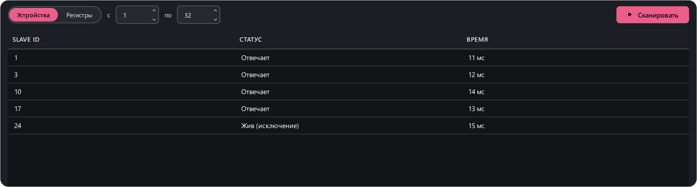
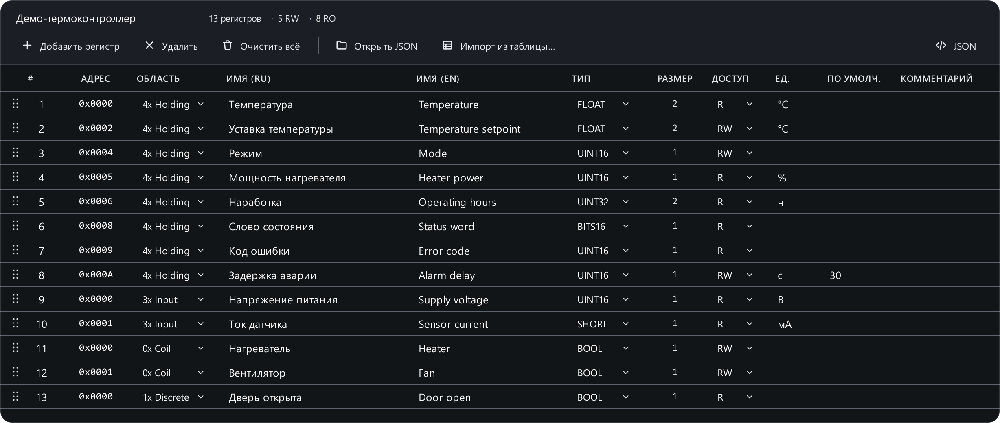

Бесплатная программа для Modbus RTU
ModbusReader — наладка, опрос и мониторинг приборов по Modbus RTU через RS-485: карта регистров с именами и единицами, графики в реальном времени, дашборд, сканер, сниффер, макросы и эмулятор прибора (Slave).
Windows 10 / 11 · бесплатно · открытый код (GPL-3.0) · русский и английский интерфейс · автообновление

Что умеет программа
Опрос и запись регистров
Modbus RTU Master: holding- и input-регистры, coils и discrete inputs (FC 01–06, 15, 16). 24 типа данных — UINT16, INT32, FLOAT, DOUBLE, BCD, строки, битовые слова — с настраиваемым порядком байт, масштабом и перечислениями.
Эмулятор Modbus Slave
Программа отвечает мастеру как прибор — удобно проверять SCADA, панель оператора или ПЛК, когда реального прибора нет под рукой.
Сниффер RS-485
Прослушивание линии через второй адаптер без единого переданного байта: кто кого спросил, что ответил, где сбой CRC.
Сканер шины
Поиск приборов на линии по адресам и поиск живых регистров на одном приборе.
Консоль и разбор кадров
Журнал обмена с расшифровкой каждого кадра и отправка сырых кадров — CRC16 считается автоматически.
Логгер и макросы
Многочасовая запись в CSV для Excel; скрипты на Python читают и пишут регистры по именам и собирают таблицу результатов.
Графики и пульт оператора

Графики в реальном времени
Любой регистр — на график одним щелчком: мин / макс / среднее, окна от 10 секунд до 10 минут.

Дашборд из 14 видов виджетов
Стрелочные приборы, лампы, кнопки, тумблеры, ползунки и таймеры, а провода между ними дают простую автоматику без программирования.
Инструменты наладчика

Сниффер
Разбор чужого обмена на линии.

Эмулятор (Slave)
Ответы мастеру по открытой карте регистров.

Сканер
Какие адреса отвечают на линии.

Редактор карты
С нуля или импорт из CSV / Excel.
Установка
- ModbusReader-Setup.exe — установщик (для всех пользователей или только для себя);
- портативная версия
ModbusReader.exe— на странице Releases; - нужен USB-адаптер RS-485 (или RS-232) с драйвером производителя; Python ставить не нужно.
При первом запуске открывается демо-проект «термоконтроллер», так что программу можно посмотреть и без прибора. Если Windows предупредит «Система Windows защитила ваш компьютер» — нажмите «Подробнее» → «Выполнить в любом случае»: программа пока не подписана платным сертификатом.
Частые вопросы
Какая программа нужна, чтобы прочитать регистры прибора по Modbus RTU?
ModbusReader: подключите USB-адаптер RS-485, укажите порт, скорость, чётность и адрес прибора и нажмите «Подключить». Регистры читаются циклически, запись — двойным щелчком.
Есть ли бесплатная альтернатива Modbus Poll и Modbus Slave?
Да — ModbusReader работает и мастером, и эмулятором прибора, бесплатно и с открытым кодом.
Как проверить SCADA или контроллер без реального прибора?
Включите «Эмулятор (Slave)»: программа ответит мастеру по открытой карте регистров (FC 01–06, 15, 16). На одном компьютере подойдёт пара виртуальных COM-портов, например com0com.
Как посмотреть обмен на линии RS-485, не вмешиваясь в него?
Сниффер слушает линию через второй адаптер, ничего не передавая, и показывает запросы, ответы и ошибки CRC.
Работает ли программа на Linux и macOS?
Готовые сборки — для Windows. На Linux и macOS программу можно запустить из исходников (Python 3.10+), инструкция — в README.
Помочь проекту
Сообщения об ошибках, идеи и карты регистров приборов — в Issues. Звезда на GitHub помогает другим найти программу, а поддержать разработку можно на dalink.to/mercurrial.